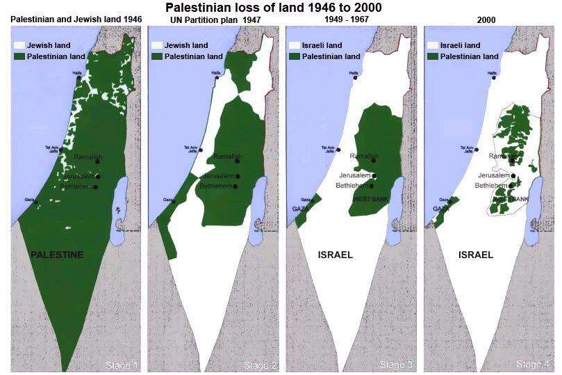

Je précise que je ne partage pas les vues de l’auteur. Si j’ai cru utile de faire connaître son point de vue aux lecteurs chrétiens qui aiment Israël, c’est pour qu’ils sachent comment ce peuple est perçu. J’y reviendrai. En attendant j’ai réagi aux considérations de l’auteur par un article intitulé « Un signe avant-coureur d’une apostasie chrétienne au profit de la cause palestinienne »
Le conflit entre Israéliens et Palestiniens est un problème herméneutique difficile aujourd'hui en raison de la théorie d'idées non fondées propagées par les communautés chrétiennes évangéliques qui continuent de confondre leur sens de l'histoire 1. Aux Philippines, par exemple, les pasteurs chrétiens enseignent à l'école du dimanche qu'Israël est le peuple de Dieu. Sur le plan personnel, en tant que membre d'une telle congrégation, j'ai intériorisé cela sans avoir une vision critique de ses implications idéologiques et géopolitiques. Situées dans une telle position, les notions de promesses abrahamiques résonnent dans le cœur et l’esprit de la plupart des chrétiens, ce qui renforce les revendications religieuses et idéologiques du mouvement sioniste. En conséquence, prendre le parti des Israéliens contre les Palestiniens équivaut à l'idée qu'on est du côté de Dieu, comme le dit l'Ecriture. Cette croyance a émerveillé de nombreuses communautés chrétiennes dans le monde entier. Cette rhétorique religieuse et idéologique a convaincu les croyants de faire preuve d'empathie envers les Israéliens.
Le mythe du sionisme a été instauré à la suite d'une résolution onusienne rusée et a été érigé en réalité géopolitique lorsque David Ben Gourion a été nommé premier Premier ministre de l'État d'Israël. Ben Gourion a gravé progressivement la croyance eschatologique judéo-chrétienne dans l'esprit des gens, en affirmant que Dieu lui donnait pour mandat d'établir l'État moderne d'Israël 2. Ce processus favorisait un détournement du judaïsme par l'idéologie du sionisme. Ce discours religieux légitimait un système d'apartheid implanté sur les territoires de la Cisjordanie et de la bande de Gaza, qui a développé un sentiment d'animosité florissant parmi ses occupants jusqu'à ce jour. De plus, cette idéologie politique a bénéficié d’un grand soutien en s’étendant, depuis sa création, à d'autres communautés du monde entier notamment par l'émergence du christianisme fondamentaliste sur le continent européen et plus tard aux États-Unis 3. C'est cette interprétation littéraliste invétérée des chrétiens fondamentalistes et des idéologies politiques non fondées du sionisme, qui a brouillé la véritable histoire de la naissance de l'État d'Israël au XXe siècle, comme le confirment la plupart des érudits et des historiens religieux. Dans le cadre de ce débat, les Églises chrétiennes pro-israéliennes aux Philippines se sont malheureusement associées au même mouvement. Par exemple, des versets bibliques tel celui-ci: «Je bénirai ceux qui te béniront et je maudirai ceux qui te maudiront; et tous les peuples de la terre seront bénis par votre intermédiaire" 4 sont mal utilisés, ce qui crée la violence symbolique contre l'"Altérité" des Palestiniens. On peut faire remonter cette interprétation littéraliste de l'Écriture à la deuxième vague des missions évangéliques chrétiennes américaines aux Philippines, après la Seconde Guerre mondiale, et ces points de vue n’ont pas fait l’objet de discussions approfondies entre chrétiens protestants et évangéliques.
Une inversion de la réalité se produit lorsqu’on exprime publiquement une critique flagrante de la politique et des atrocités infligées aux Palestiniens. Cette critique est généralement perçue comme une forme d'antisémitisme et inverse la réalité en faisant de la victime le mauvais. Ce qui se passe ensuite, c’est que ce renversement de la réalité palestinienne devient une ruse politique qui donne du pouvoir à celui qui victimise. Le militant juif américain Norman Finkelstein 5 affirme que reprocher aux critiques de la violence politique israélienne contre les Palestiniens de constituer une forme d'antisémitisme est une accusation trompeuse et mal informée. Finkelstein soutient qu'elle a été utilisée pour détourner l’attention de la communauté internationale de la réalité concrète vécue sur le terrain. De tels classements sont des étiquettes erronées qui immunisent l'État d'Israël contre les critiques de sa politique raciste, militariste et d'apartheid à l'égard des Palestiniens 6. Finkelstein ajoute que l'État sioniste utilisait cette idée erronée pour obtenir un profit, un poids politique et le soutien aveugle et inébranlable de la communauté internationale pour les colonies expansionnistes et illégales d’Israéliens en territoire palestinien.
Pour détourner l'attention internationale, l'une des actions les plus difficiles de l'État d'Israël est la mise en œuvre d'une politique de transfert silencieux dans la zone C en Cisjordanie et à Jérusalem-Est 7. Cette politique silencieuse de transfert a déraciné ces Palestiniens autochtones de leurs terres. Les critiques disent que l'État d'Israël a pour politique secrète de faire avancer son projet de colonisation ou de sionisation de la Cisjordanie. Malheureusement, la manipulation de l'information, l'hypocrisie et la duplicité dans les principaux médias concernant cette politique secrète, comme le décrit Finkelstein, sont indéniablement observables.
La question se pose alors de savoir pourquoi cela se produit. Les chercheurs suggèrent qu'il y a deux raisons fondamentales: premièrement, le présupposé religieux ancré dans mon esprit que Jésus était juif; Deuxièmement, ma lecture paulinienne du Nouveau Testament a été fortement influencée par la théologie de la dispensation. Cette théologie dispensationaliste est devenue le cadre et le fondement singuliers de cette pensée théologique. Selon les théologiens de la dispensation, Israël est aujourd'hui la descendance [?] directe des Israélites ou des douze tribus de Jacob 8. Par conséquent, cette affirmation idéologique religieuse est
Peu de temps après mes trois mois de programme œcuménique d'accompagnement en Palestine et en Israël (EAPPI), tout a changé. En conséquence de ma compréhension de la lutte palestinienne, de mon témoignage et de ma vie sous l'occupation israélienne, j'ai réalisé que je devais repenser ma position théologique chrétienne. Sans aucun doute, le programme d'accompagnement œcuménique en Palestine et en Israël m'a ouvert les yeux. En raison de mon insatisfaction croissante à l'égard de certaines de mes précédentes organisations sociales, de certaines pratiques culturelles et de certaines convictions théologiques, je suis amené à explorer le ministère social du Conseil œcuménique des Églises. Nous nous sommes rendu compte que les affirmations mythologiques de l'État moderne d'Israël et des principaux médias occidentaux ont une motivation idéologique ayant pour but de fabriquer et de déformer l'image des Palestiniens. Ils déforment et trompent et éclairent plutôt qu’ils n’éclairent la communauté internationale sur la situation réelle dans la région de Cisjordanie.
Lorsque nous avons visité l'énorme frontière de Gaza, nous avons été étonnés de constater à quel point la communauté israélienne vivant à proximité de la frontière était sécurisée. Indéniablement, le mur est hautement équipé et mobile, capable de diffuser des images sous divers angles. Je commence à me demander comment les Palestiniens à Gaza peuvent riposter. En fait, les Palestiniens de la région de Gaza ne disposent d'aucune capacité militaire pour ce faire. Je constate à quel point il est impossible pour la population de Gaza de lutter contre tous ces dômes de fer et ces immenses frontières qui ont été construits par l'État moderne d'Israël. Comme Noam Chomsky l'a décrit, Gaza est une prison à ciel ouvert 10. Toutes les images et informations fabriquées sur les Palestiniens se décomposaient dans mon esprit. De temps en temps, je commençais à distiller une certaine compréhension conceptuelle de mes expériences. Finalement, je suis parvenu à la conviction que quelque chose n'allait pas dans mes propositions biblico-théologiques concernant l'État moderne d'Israël. Quelles que soient mes tentatives, je savais que je ne comprenais pas la réalité du territoire palestinien occupé, telle que la décrivaient les médias occidentaux. Quel que soit l’opinion, favorable ou hostile, que l’on ait de l'État moderne d'Israël, je suis fasciné par leurs revendications déformées d'être une nation de Dieu. Comme le souligne le politicien trotskyste britannique Jose Rose, il s’agit d’un tour de passe-passe intellectuel consistant à manipuler les récits bibliques pour les adapter aux revendications politiques du sionisme sur la terre palestinienne 11. Si l’on prenait cela au sérieux, le résultat de cette doctrine idéologique serait un accroissement des violations du droit fondamental des Palestiniens en Cisjordanie et dans la Bande de Gaza 12. Pour être honnête, j’ai passé deux ans à traiter et à réorienter ma compréhension mal informée du conflit moderne en Israël et en Palestine. À mon avis, expliquer ce paradoxe apparent requiert en premier lieu que l’on procède à une discussion de fond sur le développement historique du sionisme et sur la contribution de l'eschatologie chrétienne au conflit actuel. Deuxièmement, sur la base d’une réflexion postcoloniale sur la réponse anti-essentialiste empruntée à Edward Saïd, savant intellectuel palestinien, je dois me préparer à affronter le point de vue dominant dans différentes institutions théologiques ou séminaires aux Philippines. Troisièmement, je dois parler de la culture du silence dans les communautés chrétiennes et, enfin, proposer un moyen de faire de la philosophie pour répondre à une quête de l'émancipation des Palestiniens. Deuxièmement, à travers une réflexion postcoloniale sur la réponse anti-essentialiste empruntée à Edward Saïd, savant intellectuel palestinien, je dois je dois me préparer à affronter le point de vue dominant dans différentes institutions théologiques ou séminaires aux Philippines. Troisièmement, je dois parler de la culture du silence dans les communautés chrétiennes et, enfin, proposer un moyen de faire de la philosophie pour répondre à une quête de l'émancipation des Palestiniens.
Sur le plan géopolitique, la soi-disant tension religieuse engendrée par la naissance de l’État moderne d’Israël, que nous connaissons aujourd’hui, a, selon moi, son origine dans les exigences et les intérêts concurrents des colonisateurs occidentaux et de toute la région du Moyen-Orient et de la région d’Afrique du Nord. Certes, il est particulièrement prisé pour sa situation géographique, qui permet à de puissants pays occidentaux de contrôler une grande partie du Moyen-Orient. Comme l’explique Chomsky, la présence d'Israël dans la région MENA [Moyen-Orient et Afrique du Nord] qui sert de chien de garde ou de connexion militaire des États-Unis a été jugée nécessaire pour contrecarrer les concurrents de la superpuissance mondiale de l'industrie de l'or noir 13-14. En dehors de ces concurrences sur le marché du pétrole, nous savons que le mouvement stratégique américano-israélien (sioniste) au Moyen- Orient semble également rechercher la domination politique dans toute la région 15. Inspirée par l'idéologie sioniste à visage religieux, la création de l'État moderne d'Israël implique la victoire de l’idéologie expansionniste sur le territoire palestinien 16. De plus, de nombreuses questions se posent, et notamment: quand et comment ce mouvement idéologique a-t-il commencé?
Comment Israël est-il devenu un acteur étatique puissant dans la région du Moyen- Orient? Comment se fait-il que le christianisme mondial se taise à propos de la violence du crime commis par le mouvement sioniste contre le peuple palestinien?
Je ne prétends pas tout savoir. J’affirme que dans cette section, je fournirai un aperçu du sujet sous peu. Plusieurs tentatives ont déjà été faites pour expliquer les origines de l'idéologie sioniste. Certains spécialistes tentent de retracer les mythes politico-métaphysiques qui fondent et justifient l'existence de l'État d'Israël moderne. Dans cette section, la tâche est de fournir une brève introduction au développement historique du mouvement sioniste et à la manière dont la théologie chrétienne a été cooptée ou détournée par cette idéologie religieuse en exploitant les expressions bibliques, les récits bibliques, et en projetant une géographie imaginaire pour justifier l’occupation illégale en Cisjordanie. Je suggère que la «géographie imaginaire» devient un instrument politique pour encadrer et recadrer notre compréhension du conflit israélo-palestinien et de l'ensemble de la région du Moyen-Orient. Ces mythes politico-métaphysiques (les expressions bibliques) sont à l'origine du maintien de la répression et de la culture du silence au sein de la communauté chrétienne face aux violations des droits de l'homme en Cisjordanie. Il est intéressant de voir comment cette géographie imaginaire est institutionnellement supposée par le discours académique orientaliste / colonialiste / occidental. Comme Saïd le décrit, il est évident que ce fait continue de se manifester dans les luttes palestiniennes en les déplaçant et en effaçant leur histoire et leur identité 17.
En lien avec mes exposés au cours du programme EAPPI, j'ai commencé à remettre en question ma compréhension théologique et mes propositions basées sur la théologie dispensationaliste. À ma grande consternation, j'ai découvert qu'il existait diverses théories et affirmations historiques sur le moment et le lieu où ce mouvement idéologique s'est formé progressivement et systématiquement. Il est assez difficile de déterminer si le christianisme occidental était au stade de développement ou pas du tout. J'ai appris que le mouvement sioniste exerçait une très grande influence politique, économique et sociologique. Certes, nous sommes confrontés à une idéologie religieuse qui prétend être toute-puissante, sans alternative, et apparemment impossible à contester ou à changer.
On peut soutenir que la création du sionisme tourne souvent autour de la doctrine eschatologique chrétienne, en particulier de la «théologie dispensationaliste». Stephen Sizer affirme que la théologie dispensationaliste est une doctrine eschatologique répandue, créée par l'interprétation littéraliste occidentale des Écritures 18. Selon Sizer, l'histoire du monde se divise en «dispensations», périodes divinement établies. Cette doctrine théologique soutient que Dieu a fait à Israël des promesses spécifiques qui se réaliseront plus tard. Les théologiens dispensationalistes lisent les Écritures chrétiennes en utilisant les événements actuels. Bien entendu, comme on pouvait s'y attendre, les dispensationalistes chrétiens choisissent des versets de la Bible. En interprétant littéralement et en citant des versets bibliques, ils justifieront leur fanatisme par le moyen des Écritures chrétiennes.
Je considère les théologiens dispensationalistes comme une communauté de fin des temps, qui s’autoproclame prophétique. Les chrétiens fondamentalistes occidentaux, tels qu'ils se sont exprimés en tant que communauté qui survivra aux temps de la fin, ont ouvert la voie à la création de l'État d'Israël moderne. En utilisant des expressions bibliques, les juifs sionistes et la doctrine eschatologique chrétienne renforcent et promeuvent une «géographie imaginaire». On peut dire que ce concept a forgé, reconceptualisé et sionisé la Cisjordanie et la bande de Gaza Palestine. Ironiquement, les penseurs sionistes ont des origines laïques et pourtant, les sionistes affirment que la Bible en hébreu est leur charte. Comme le décrit Nur Masalha, les sionistes ont saisi, radicalisé et nationalisé les Écritures hébraïques, qui sont devenues des sources centrales des mythes fondamentaux modernes du sionisme laïque 19. Cela favorise leur vision imaginaire des territoires convoités ou illégalement occupé, qui deviennent pour eux des sites, non de réflexion et de contestation, mais de projection et d'accomplissement des prophéties bibliques. En conséquence, les Écritures hébraïques et chrétiennes sont devenues un appareil idéologique qui leur permet de projeter et de justifier l'occupation (la sionisation) de Jérusalem-Est et de la Cisjordanie.
Historiquement, théologiquement parlant, la théologie de la dispensation est souvent discutée et est donc extrêmement compliquée. Je n'en ai tracé ici qu’une esquisse brève et partielle. La théologie de la dispensation fut promue après la Première Guerre mondiale par Cyrus Ingerson Scofield (1843-1921), auteur de la Bible de référence Scofield 20. Ce matériel a largement circulé parmi les communautés chrétiennes et les séminaires à travers le monde. Selon les critiques, ces matériaux ont suscité une tempête de controverse parmi les érudits bibliques et les communautés chrétiennes. John Nelson Derby est l’un des partisans et personnalités influentes de cette doctrine théologique. La connaissance biblique de Derby est discutable. La plupart des théologiens de l'administration chrétienne considèrent que John Nelson Darby (1800-82) est le père du dispensationalisme et son protégé, à savoir Cyrus I. Scofield et D.L. Moody 21. À son époque, les efforts de Darby se sont apologisés au sujet de la compréhension théologique chrétienne de la fin des temps qui a attiré la plupart des églises américaines. Il a été suggéré que le sionisme avait été formulé à l'origine par des théologiens chrétiens au Royaume-Uni, puis en Europe à la fin du XIXe siècle 22. Il a finalement été importé aux États-Unis d'Amérique.
Stephen Sizer affirme que les protégés de Darby, Scofield et Moody, ont introduit la théologie sectaire de Darby dans les cercles évangéliques traditionnels 23, et qu’elle a été acceptée par la majorité des télé-évangélistes américains du courant majoritaire actuel, notamment dans la ‘ceinture de la bible’ (Bible belt) américaine 24. Selon le sondage, 82% des chrétiens évangéliques blancs pensent que Dieu a donné Israël au peuple juif25. Le développement spectaculaire de ce système théologique peut être attribué à la conviction individuelle ou à l'interprétation de son institutionnalisation. On peut dire que les trois plus grands séminaires des États- Unis, à savoir le Moody Bible Institute, le Dallas Theological Seminary et le Southwestern Baptist Seminary, sont les principaux établissements d’enseignement religieux du monde qui adhèrent à la théologie de la dispensation et qui sont sionistes chrétiens 26. A côté de ces mouvements il y a maintenant une prolifération de ces idéologies et mouvements sionistes-chrétiens sur le terrain et au niveau des institutions, en particulier dans les médias. De toute évidence, cette stratégie est soutenue par des lobbyistes, des diplomates et des églises chrétiennes pro-israéliens du monde entier. Cette stratégie va à l'encontre du mouvement sioniste antichrétien croissant dans le monde, qui la considère comme une nouvelle forme d'antisémitisme, ainsi que de ceux qui s'inquiètent de la menace croissante qu’elle fait peser sur la légitimité des revendications politico-métaphysiques sionistes de l'État moderne d'Israël.
L’une des puissantes organisations sionistes chrétiennes internationales est l’ambassade chrétienne internationale de Jérusalem ou ICEJ 27. L’ICEJ est également étroitement lié à l’une des plus grandes organisations chrétiennes sionistes des États- Unis; Des chrétiens unis pour Israël dirigés par le populaire évangéliste américain John Hagee 28. Malgré de nombreuses controverses sur le fait d'être à la fois chrétien et sioniste, ces personnes se sont engagées à soutenir le programme sioniste et son organisation dispensationaliste. Aucun de ces [précurseurs] n'est intimidé par les critiques. Ces sionistes chrétiens et ces théologiens dispensationalistes doivent être tenus pour sacro-saints, vigilants et se distinguent par la force émotionnelle avec laquelle ils défendent l'État d'Israël.
Du fait de sa diversité, il est difficile de ramener toute la théologie dispensationaliste à quelques valeurs fondamentales. Néanmoins, les croyances les plus importantes ont été identifiées et ont fait l’objet d’un consensus parmi les théologiens de la dispensation. Les principaux accords ou thèmes des théologies dispensationalistes sont les suivants: premièrement, l’État moderne d’Israël est la nation actuelle de Dieu (qui descend directement des anciens Israélites); deuxièmement, la terre promise n'appartient qu'à l'Israël moderne (en propriété absolue et non conditionnelle); troisièmement, la condition préalable de la venue du Christ est la reconstruction du prétendu «troisième temple» 29, exactement là où se trouve le dôme du rocher; enfin, ces nations incroyantes s'uniraient et comploteraient contre
L’un des principaux arguments des juifs sionistes et des dispensationalistes chrétiens, c’est que l’État moderne d’Israël est le descendant direct de l’ancien Israël. En termes de résultats, cette affirmation historique a engendré une énorme quantité de problèmes et de misères multiples pour les Palestiniens. En 1948, lors de la création de l’État d’Israël d’aujourd’hui, cette interprétation théologique s’est mélangée à un élément idéologique et a servi de justification aux Israéliens sionistes pour éliminer les villes et les villages palestiniens. En termes de décès, le nombre de morts des deux côtés a augmenté. Statistiquement, au cours de la seule année 2000, au moins 1 198 Israéliens et 9 151 Palestiniens auraient été tués au plus tard le 29 septembre 30. De plus, les actes de violence et les massacres en cours dans la bande de Gaza et en Cisjordanie ne sont pas inclus dans ces chiffres. En août 2014, l'opération militaire israélienne à Gaza était indéniablement un crime contre l'humanité 31. Le statut de l'État d'Israël d'aujourd'hui, en tant que descendant direct des anciens Israélites bibliques, à l'abri des critiques de la part de chrétiens du monde entier, de militants juifs, de mouvements de défense des droits de l'homme, et les lois internationales.
Deuxièmement, la reconstruction du concept du troisième Temple est prédominante parmi les Juifs sionistes et Chrétiens fondamentalistes qui considèrent que l'état moderne d'Israël est l'accomplissement direct des promesses de la Bible hébraïque. Pour le revendicateur juif, il s’agit d’un accomplissement eschatologique de la promesse davidique. Comme nous en avons discuté précédemment, ce concept est le cadre et le thème principal de la théologie dispensationaliste et de l'idéologie sioniste. Peut-être, dirais-je, la pièce maîtresse de l'idéologie sioniste. On pourrait dire que l'apogée de la prophétie de la fin des temps est la venue de Christ [Parousie. La venue de Christ doit défendre l'État d'Israël des temps modernes contre toutes les nations qui ont comploté contre elles. Si l'on se penche sur les innombrables publications sur le thème du concept de la reconstruction du troisième temple, il est très inquiétant et dangereux de voir la théologie du dispensationalisme, en particulier dans le contexte des conflits entre la Palestine et Israël. Cependant, tout n'est pas acceptable par les communautés juives, chrétiennes et musulmanes. Pour les chrétiens dispensationalistes et les juifs sionistes, la reconstruction du troisième temple constituerait un symbole divin national pour l'État d'Israël d'aujourd'hui. Inutile de dire que ce serait un triomphe de la colonisation occidentale de la Palestine et un désastre pour toute la région du Moyen-Orient.
Pour réaliser ce thème apocalyptique, les théologiens de la dispensation soutiennent que la communauté chrétienne mondiale devrait apporter son soutien inconditionnel à l'État d'Israël moderne. En plus de ses partisans chrétiens, le mouvement sioniste mondial bénéficie d'un formidable soutien politique de la part de pays occidentaux puissants tels que les États-Unis, la Grande-Bretagne et l'Allemagne. Il y a plus de dix ans que nous sommes témoins du soutien indéfectible de l'Israël moderne par la nation la plus puissante du monde, les États-Unis d'Amérique. Les partis de droite et les communautés conservatrices chrétiennes s'unissent pour adopter et poursuivre le programme sioniste dans la politique des États-Unis au Moyen-Orient. Les résultats de cette relation privilégiée, qui se traduisent par des aides militaires et financières inconditionnelles à l'État d'Israël de nos jours, sont accablants. Comme le décrit Chomsky, les États-Unis entretiennent depuis des décennies cette relation privilégiée avec Israël, qui s'exprime à deux niveaux: aide militaire et aide économique 32. Cette alliance impie est controversée et incontestée. En théâtralisant les expressions et les récits bibliques, les théologiens dispensationalistes chrétiens croient que soutenir l’entreprise sioniste dans la région du Moyen-Orient et de l'Afrique du Nord équivaut à préparer le retour imminent du Christ. Parallèlement, comme le soutiennent John J. Mearsheimer et Stephen M. Walt, le rôle principal de Washington consiste à fournir un soutien diplomatique inconditionnel et des votes dans les résolutions du Conseil de sécurité 33. Cela tient à la forte influence juive des lobbyistes au Congrès américain. Ils versent à Israël des milliards de dollars en soutien financier des États- Unis et d'autres pays occidentaux. Il va sans dire que les lobbyistes juifs sionistes aux États-Unis apportent un soutien matériel et financier à Israël. Ainsi, selon la critique, les lobbyistes juifs sionistes et la droite chrétienne sont des bellicistes et des racistes. Les chrétiens pro-israéliens fournissent une justification idéologique religieuse au crime de guerre contre les Palestiniens. Comme le dit simplement le ministre palestinien chrétien et luthérien Mitri Raheb, la communauté internationale fournit à Israël un matériel informatique tandis que les églises chrétiennes de droite ou fondamentalistes fournissent à Israël un logiciel 34.
Le narratif idéologique et la projection idéologique entre chrétiens et sionistes constituent un programme destructeur, amenant les communautés chrétiennes du monde entier à ne pas critiquer les crimes commis par l'État moderne d'Israël. Sous l'influence du charme idéologique sioniste, les théologiens dispensationalistes chrétiens légitiment les atrocités commises par le régime sioniste (État moderne d'Israël). Depuis 1948, il s’agit des «titres de propriété» qui justifient la division ethnique, l’occupation militaire, la construction du mur d’apartheid et les violations des droits de l’homme dans le territoire palestinien occupé. Nous pouvons voir tout de suite les liens entre idéologie et implication religieuse à travers la compréhension de la théologie dispensationaliste et l’idéologie du sionisme.
Cette section est consacrée au concept des travaux d’Edward Said sur la géographie imaginaire. Si l'on veut comprendre la contribution de Saïd aux débats en cours, il faut disposer de connaissances de base concernant le colonialisme, les politiques d'identité et de pouvoir, pour connaître les fondements des conceptions du penseur français Michael Foucault sur le lien entre pouvoir et savoir 36. Comme Foucault, Saïd commence par la question fondamentale du lien entre le discours universitaire et le savoir sur le pouvoir 37. Le travail de Foucault présente ce vocabulaire critique familier dans Discipline and Punish: The Birth of the Prison and The History of Sexuality, Volume 1, et on peut identifier certains éléments de sa pensée qui sont importants pour Saïd. Foucault a soutenu que le pouvoir est fondamentalement un savoir produit et reproduit. Il affirme que le pouvoir élabore notre connaissance ou notre idée du monde. Il décrit les structures de pouvoir et la structuration de notre monde constitutif immédiat. De toute évidence, il y a beaucoup de similitudes dans cette interrelation précise entre l’idée de Saïd et celle de Foucault sur la relation entre pouvoir et connaissance. En fait, Saïd critique nos institutions académiques actuelles en raison de leur relation avec l'impérialisme économique et l'impérialisme des médias qui l’accompagne 38. Comme Saïd le soutient, un processus systématique d'orientalisation de l'orient par les universitaires occidentaux est ambigu et stéréotypé 39. En bref, les catégories orientales étaient à l'origine le résultat de l'impérialisme politique et idéologique occidental. Dans le cas des conflits entre Israël et la Palestine, Israël est toujours présenté comme une victime et les Palestiniens comme des terroristes. Les discours idéologiques chrétiens dispensationalistes et sionistes ont réussi à propager ce statut de victime construit idéologiquement à l’encontre de la vision des choses palestiniennes. Dans les résultats, cela déforme l’image de la Palestine; fait taire leur voix et marginalise les militants palestiniens et juifs qui se sont battus pour leur survie contre les atrocités et les occupations de l'État d'Israël moderne. Ironiquement, pendant que les Israéliens se battent pour l'occupation, les Palestiniens luttent pour leur survie.
Encore une fois, en utilisant la terminologie biblique, l’État d’Israël moderne projette une «géographie imaginaire» sur le territoire palestinien. En outre, la suprématie blanche juive devient une idéologie notoire qui vise à coloniser la Palestine. Keith W. Whitelam soutient que la suprématie des Blancs juifs tente de nier l’espace et le temps de l’histoire ou de l’existence des Palestiniens 40. Mais comment s’exprime cette géographie imaginaire? Outre une certaine méthodologie et un certain style, Saïd s’appuie sur la théorisation importante du pouvoir et de la connaissance, de Foucault. Cette discussion fournit une consolidation de l'idée selon laquelle les dispensationalistes et les sionistes juifs construisent et reconstruisent leur narratif de la terre de Palestine. L'État moderne d'Israël exploite l'interprétation littérale des Écritures hébraïques et chrétiennes. En projetant ces anciennes cartes bibliques sur le territoire palestinien, ils rejettent leur crime d'occupation. Evoquer et purger les anciens noms et villes des Écritures met fin aux droits fondamentaux et à l'histoire de la communauté palestinienne autochtone. Le processus de judaïsation ou de sionisation se déroule en utilisant la tradition inventée et l'archéologie pour anéantir toute trace des Palestiniens dans le territoire palestinien occupé. Par exemple, l'État sioniste efface les noms de villes et de villages palestiniens en les remplaçant par des noms bibliques et en utilisant trois formes de démolition: punitive, administrative et militaire / le défrichement des terres 41.
En effet, c’est une pensée troublante que la supériorité sioniste utilise le lienn avec les Écritures hébraïques ou les Écritures chrétiennes pour conquérir la terre palestinienne. Ainsi, la géographie imaginaire fonctionne comme un discours et une action continue qui va de l’avant, permettant à l’occupation israélienne de la terre de Palestine d’atteindre un degré infini de progrès. De toute évidence, c’est ainsi que l’État moderne d’Israël utilise et manipule le langage ou la terminologie bibliques pour créer et renforcer son pouvoir de coloniser ou de sioniser la terre de Palestine. Des termes tels que «peuple élu», «terre promise» ou «terre sans peuple pour un peuple sans terre» constituent un discours qui s’inscrit dans le continuum de la colonisation ou de la sionisation de la terre de Palestine. Au plus fort de la tension entre l’Iran et les États-Unis et ses alliés, le Premier ministre d’Israël, Benjamin Natanyahu, a fourni au président des États-Unis, Barak Obama, une histoire biblique génocidaire - l'histoire d'Esther qui se termine par l'assassinat massif de Perses 42. Par ce geste, le Premier ministre israélien souligne que la violence est au cœur du texte sacré, en particulier pour ceux qui ne sont pas favorables à l'existence du projet illusoire et impérialiste de l'État d'Israël dans la région MENA. Les politiciens conservateurs, les juifs et les chrétiens sionistes exploitent souvent le texte religieux dans leurs déclarations publiques et leurs apparitions publiques afin d'être plus attractifs et convaincants pour leur auditoire chrétien. De telles stratégies sont efficaces auprès des auditeurs non informés. Cette tendance théopolitique n'est pas simplement le résultat d'une commercialisation réussie de politiciens sionistes, lobbyistes et diplomates qualifiés. Elle s’inspire plutôt du texte religieux de l’Écriture. Elle s’efforce d’encadrer et de reformuler la question et parle de la soif qu’avait le peuple élu de Dieu de faire la guerre à l’ennemi. Ces problèmes ne peuvent pas être dissociés du cadre de la théologie dispensationaliste dans laquelle ils sont apparus et ont développé leur besoin urgent de coloniser ou de sioniser la terre de Palestine.
Dans la rhétorique et la perception de soi sionistes, il semble que le texte sacré serve de référence à la manière de traiter les Palestiniens par le lynchage, le pogrom et les technologies d’armement d’aujourd’hui, comment traiter. Pour Saïd, projeter cette terminologie biblique est une forme occidentale de la domination de l'Orient 43. Dans le cas de la sionisation de la terre de Palestine, cela montre clairement comment l'histoire est écrite par les vainqueurs. Des expressions bibliques telles que "peuple élu", "terre promise" ou "une terre sans peuple pour un peuple sans terre", sont constitutives de l'interruption des pluralités et de la suspension des diversités. La multiplication des significations fait penser à la singularité des revendications absolues des Juifs sionistes sur la terre de Palestine. Pour eux, défendre les droits surnaturels de l'État d'Israël sur la terre de Palestine, c'est respecter les promesses de Dieu. Cette définition a une action politique qui suggère que les Israéliens de nos jours sont prêts à défendre leur idéologie égoïste d’exception. De plus, Saïd note que cette terminologie biblique exerce un pouvoir hégémonique unilatéral de l’Occident sur l’Orient 44. Cette impulsion encourage et tente de construire et de reconstruire l’identité, l’histoire locale et l’avenir de l’Oriental; souvent, elle persécute ce qu'elle considère comme une menace pour le pouvoir de l'Occident.
Le processus vise à marginaliser et à exclure un certain groupe, des croyances et des pratiques, et à autoriser un autre groupe, et d’autres croyances et pratiques. Il y a un répertoire immense de colonisation sioniste ou de sionisation de la terre de Palestine. Le résultat de l'instrumentalisation de cette terminologie biblique est désastreux pour les Palestiniens. Selon le rapport de l'IDMC, publié en 2014 par le Centre de surveillance des déplacements intérieurs 45, au moins 263 000 personnes déplacées à l'intérieur de leur propre pays se trouvaient en Palestine occupée. En outre, de 1948 à 1967, les Palestiniens ont perdu près de 78% de leurs terres au profit de l'État d'Israël 46. Cette sionisation ou colonisation est un processus continu jusqu'à ce moment-là 47. Les réfugiés palestiniens sont un autre problème important.

Crédit Photo: JRIJ, 201548 L'Office de secours et de travaux des Nations Unies pour les réfugiés de Palestine (UNRWA) a établi que depuis 1950, l'UNRWA répond aux besoins essentiels de 750 000 réfugiés dans la seule Palestine 49. En outre, l'UNRWA a également déclaré qu'environ 5 millions de réfugiés de Palestine bénéficiaient des services de l'UNRWA 50. L’opinion exprimée ici est qu’une grande partie de ce qui se passe sur la terre de Palestine et chez les Palestiniens est une forme de nettoyage ethnique. En fait, c'est ainsi que la décrit l'historien israélien contemporain Ilan Pappé, dans son livre intitulé "Le nettoyage ethnique de la Palestine" 51, tandis qu'Anita Shapira confirme que les dirigeants sionistes légitimaient auparavant le recours à la terreur à l’encontre de civils palestiniens 52 des villages palestiniens. La carte ci-dessous est une représentation de la colonisation / sionisation / judaïsation systématiques du territoire palestinien (Figure 1).
Il y a quelques années, il y avait une soif de poursuite académique du discours d'identité des Israéliens et des Palestiniens. Les nouvelles internationales sur la question des études de séquençage de l'ADN ou du mouvement eugénique concernant les Juifs sionistes occidentaux étaient très inquiétantes. Les gens étaient préoccupés par la composition génétique basée sur les revendications théopolitiques historiques des Juifs modernes 53. Ironiquement, la science moderne est devenue un outil politique permettant de manipuler une revendication de vérité spécifique. Mazim B. Qumsiyeh, ancien professeur palestinien de génétique et directeur des services de cytogénétique clinique à la Yale School of Medicine, affirme qu'il s'agit d'une exploitation intentionnelle de la science au profit d'une idéologie politique 54. En réalité, cette pratique de la pureté raciale n’est pas une nouveauté pour nous. Le lien entre la biologie, l'idéologie et la religion est un héritage commun à tous les États modernes. Le gabarit de nombreuses politiques identitaires est soutenu par une construction et une reconstruction impressionnantes des faits. Entre 1907 et 1960, le gouvernement des États-Unis a eu recours à la désinfection pour empêcher les personnes jugées génétiquement inférieures de se reproduire sans leur consentement, conformément à la loi en vigueur et sans incriminer ceux qui exécutaient l’opération 55. En résumé, les victimes étaient des malades mentaux et des personnes handicapées. Cela a ensuite été radicalisé et exploité sous la direction d’Hitler en ce qui concerne les Juifs d'Europe 56. Cela montre à quel point l'État peut être puissant pour octroyer, supprimer et réduire vos droits, y compris votre identité. L'État raciste a le pouvoir de marginaliser ou d'exclure et d'inclure un certain groupe par rapport à un groupe favorisé. L’État a également la capacité de construire et de reconstruire l’identité locale et nationale 57. La tragique élimination de masse en faveur de la suprématie blanche est une forme de colonisation occidentale. Encore une fois, c’est un exercice du pouvoir hégémonique unilatéral de l’Occident à l’encontre de l’Orient. En outre, cette identité purement juive se reflète dans la Constitution d'Israël 58. Cette construction sociale de l'identité juive est devenue le facteur déterminant du discours excluant et inclusif 59.
C’est une forme de totalitarisme exercé contre identité et l’ethnie de chacun, en l’habillant d’une phraséologie religieuse, sachant que la connaissance de toutes les identités et ethnies est basée sur la construction sociale de la réalité. Mais les Juifs sionistes insistent là-dessus. Qumsiyeh fait valoir que l'apologétique des Juifs sionistes modernes prétend qu'être juif n'est pas simplement une communauté religieuse ou imaginaire, mais une communauté ethnique nationale, et une race apparues et descendant en droite ligne de l'ancien Israël biblique, en particulier des douze tribus d'Israël 60. A nouveau, c’est fonder sur les promesses de Dieu les privilèges et les droits surnaturels de l'État d'Israël sur la terre de Palestine. Cette affirmation vise à se mesurer au problème de l'identité et du droit à la terre qui a été exploré par Edward Saïd. C'est précisément une compréhension essentialiste de l'identité juive. Malheureusement, elle est répandue parmi les églises chrétiennes sionistes. En fait, les Juifs mariés à des Arabes font l’objet d’une discrimination dans la société israélienne moderne, fondée sur le statut fabriqué de «nationalité juive» 61, qui est devenue le critère de l’identité locale et nationale. C'est donc une forme de classification qui constitue le discours dominant dans le processus continu de colonisation ou de sionisation de la terre de Palestine. L'utilisation des expressions bibliques comme identité ethnique et race nationales est apparue dans leurs narratifs historiques, religieux et politiques. Cette mentalité «d'origines juives uniques» sent aujourd'hui l'extrémisme religieux et l'exceptionnalisme. Cette stratégie est bien articulée dans le liminaire de la Déclaration de la fondation de l’État d'Israël, selon laquelle la terre d'Israël est la terre du peuple juif. Ainsi, le concept «origines juives uniques» implique une forme de totalitarisme de l'identité et de l'ethnicité propres sous le revêtement du langagier religieux, exprimant l'identité complète et l'ethnicité 62. Cela devrait être contesté, remis en question et mis en cause correctement.
Ma propre analyse suggère que certaines notions importantes sont nécessaires pour les concepts globaux non contestés adoptés par les dispensationalistes chrétiens et les juifs sionistes. Même les chrétiens sionistes admettront à quel point il est difficile, voire impossible, de faire la distinction entre eux et de déceler immédiatement la différence entre théologie dispensationaliste et idéologie sioniste, puisque tous ont cherché à se conformer au paradigme de l’utilisation déformée de la terminologie biblique. Pourtant, pour les observateurs les plus sensibilisés, la conformité chrétienne à un système théopolitique de théologie dispensationaliste et d’idéologie sioniste reste une mise en œuvre potentiellement perturbatrice et efficace de la conviction politico-religieuse. Cette philosophie a joué un rôle éducatif déterminant dans la libération et l’émancipation des Palestiniens. La tâche principale de la philosophie est de déstabiliser la logique du sionisme. Le présent texte est destiné à explorer ou même à provoquer une question très sensible qui touche à des questions tout aussi sensibles, telles que la différence entre le sionisme et le judaïsme, le nettoyage ethnique des communautés palestiniennes et les injustices en Cisjordanie et à Jérusalem-Est. Je soutiens que le sionisme n'est pas représentatif de la vocation juive pour une communauté de croyants. C'est une idéologie enracinée dans une tradition métaphysique archaïque, suprématiste et raciste, qui prône la renaissance de l'altérité religieuse [Qu'est-ce que cela signifie?] et utilise les appareils politiques biopolitiques modernes. Il faut résister à la répression et à l'agression contre le peuple palestinien. Les images déformées du Palestinien doivent être contestées et reconstruites ou corrigées. Par conséquent, la tâche et l’objectif de la philosophie est de contester la dichotomie ou le dualisme essentialistes entre être Arabe et Juif, de libérer les deux peuples des positions extrémistes, et de contribuer à la justice, à la réconciliation, à la réinterprétation et à la désionisation de leurs textes sacrés. Cela implique de traiter des problèmes intouchables que les sionistes tentent de dissimuler. Les problèmes clés à résoudre sont ceux de Jérusalem, des réfugiés, des frontières et de l'avenir de la colonisation. Les gouvernements sionistes se dissimulent en utilisant les expressions bibliques déformés «peuple choisi», «terre promise» ou «terre sans peuple pour un peuple sans terre». Elles ont été utilisées par de nombreuses églises chrétiennes aux Philippines et par des sionistes juifs. Ce sont des « slogans » utilisés pour justifier la division ethnique, l'occupation militaire, un mur d'apartheid et des violations des droits de l'homme dans le territoire palestinien occupé. Ces expressions bibliques sont considérées comme des promesses de Dieu pour l’Israël moderne. Le rêve dangereux d’Israël consistant à imaginer une géographie est irréaliste et constitue en soi une forme de projection coloniale occidentale.
J'explique dans cet article que la théologie dispensationaliste est un processus dramatique qui constitue un appauvrissement de l'interprétation biblique au sein de la communauté chrétienne, aux plans social, culturel, politique et religieux. Bien qu'elle soit largement acceptée par la majorité chrétienne pour des raisons certaines et incertaines, il est absolument nécessaire de relire et de réinterpréter l'eschatologie chrétienne. Au cours des dernières décennies, les églises chrétiennes ont longtemps fait silence sur les crimes de l'État sioniste d'Israël ou les ont même soutenus. Les chrétiens du monde entier sont donc responsables de la Nakba, ou catastrophe, des Palestiniens - chrétiens et musulmans – en Palestine. Pour lutter contre cette interprétation déformée, il est important que les chrétiens s'engagent dans la désionisation de leur eschatologie chrétienne. Ce processus est l’une des tâches visant à déstabiliser les formes présentes de contrôle politique et social hégémoniques sionistes. Ce processus de désionisation implique de travailler à débarrasser de son obscurité le conflit actuel entre Israéliens et Palestiniens, en exposant ses origines dans le racisme, la suprématie blanche, la forme occidentale du colonialisme, et l'ethnocentrisme. Ces questions clés peuvent donner aux chrétiens une idée de la manière dont les sionistes lisent, manipulent et utilisent les expressions ou la terminologie bibliques. Les sionistes utilisent ces expressions, cette généalogie et ce narratif bibliques comme des instruments politiques, tandis que les médias de masse occidentaux manipulent les réalités sur le terrain. La plupart de leurs représentations et [les] grands récits décrivent Israël comme une victime. En utilisant le langage de la victimisation; cela alimente le discours populaire selon lequel Israël doit se défendre contre le terrorisme palestinien et les chrétiens prendre le parti de l'Israël moderne. Quelle que soit la question publique en cause, la tendance chrétienne est de se concentrer sur les expressions et les promesses bibliques, et sur leur accomplissement prophétique – sans prêté attention aux injustices et aux violations des droits fondamentaux de l'homme commis par l'État d'Israël à l’encontre des Palestiniens. Ce défi ne doit pas être pris à la légère. Il s’agit, pour la communauté chrétienne de répondre à un appel radical à s’opposer aux éléments idéologiques sionistes qui brisent et déforment la doctrine eschatologique chrétienne. La désionisation est une critique prophétique du pouvoir oppressif dans le langage et dans la vie. Ce processus de vérification n’est pas seulement une question de justice, il concerne également nos idées et nos préjugés propres. C'est une autocritique. Ce processus a le pouvoir de transformer la manière dont nous abordons un problème difficile et source de division. Ce faisant, la désionisation de l'eschatologie chrétienne apportera une transformation de la croyance et de l'attitude dominantes concernant le conflit israélo-palestinien. En solidarité avec les Palestiniens, nous, chrétiens, devons être à l'avant-garde de la pratique consistant à défendre l'amour du prochain pour vaincre le racisme, l'ethnocentrisme et les souffrances humaines. Nous devons proclamer et démontrer la « bonne nouvelle » désionisante au monde entier.
* Ecumenical Accompaniment Alumni, West Bank, Membre de Israel/Palestine-World Council of Churches, SOAS-Center for Palestinian Studies University of London UK.
1David D. Grafton, ‗The Use of Scripture in the Current Israeli-Palestinian Conflict,‘ Word& Word Volume, 24, Number 1 Winter 200, (Minnesota, Saint Paul, 2004), 1. ↩
2 John Rose, The Myth of Zionism, (London/Ann. Arbor, MI: Pluto Press, 2004), 8-9. ↩
3 Stephen Sizer, Christian Zionism Road-Map To Armageddon?, (England: Inter-Varsity Press, 2004), 26-30 ↩
4 Genèse 12, 1-7. ↩
5 Finkelstein est né dans une famille juive observante et survivante de l'holocauste. Selon lui, ses deux parents étaient des survivants du ghetto de Varsovie et des camps de concentration nazis. ↩
6 Norman Finkelstein, The Holocaust Industry: Reflections on the Exploitation of Jewish Suffering, (New York: Verso Publisher, 2000), 9-38. ↩
7 Voir Israel‘s Policy of Demolishing Palestinians Homes Must End – Lien vérifié le 7 mai 2015, http://www.icahd.org/node/458#sthash.F9lUbdpo.dpuf ↩
8 Les deux termes ont été vivement débattus au sein de la communauté juive et des savants hébraïsants. «Israélien» est le terme utilisé pour désigner le citoyen moderne, même s’il a une origine ethnique arabe. «Israélite» est le terme biblique utilisé dans la Bible hébraïque et la Bible chrétienne. Voir Mazin B. Qumsiyeh, ―Biology and Ideology‖, Sharing the Land of Canaan, (London/Ann Arbor: Pluto Press, 2004), 18-28. ↩
9 Je parle des pentecôtistes, des chrétiens évangéliques, des baptistes et de quelques autres églises protestantes des Philippines. Ils adoptent les lectures littéralistes de la Bible. Sur la base de mes recherches et de mes discussions avec les principales églises protestantes et orthodoxes de Cisjordanie, je peux affirmer qu'elles témoignent du soutien politique et financier de ces églises à la politique étrangère concernant la Palestine et le reste de la région du Moyen-Orient. ↩
10Noam Chomsky, “My Visit to Gaza, the World's Largest Open-Air Prison”, éditorial, 09 novembre 2012, lien vérifié le 22 octobre 2015, http://www.truth-out.org/opinion/item/12635- noam-chomsky-my- visit-to-gaza-the-worlds-largest-open-air-prison. ↩
11 John Rose, The Myth of Zionism, (London/Ann. Arbor, MI: Pluto Press, 2004) 1-7. ↩
12 Lance Selfa, Israel: The U. S. Watchdog, International Socialist Review Issue 4, Spring 1998. ↩
13 Rose, The Myth of Zionism, 1-2 ↩
14 Noam Chomsky, The Middle East Illusion, (US: Rowman & Littlefield Publishers, Inc., 2003), 3-4. ↩
15 Edward Said: Imperial Continuity - Palestine, Iraq, and U.S. Policy‖ University of Washington, The Walker-Ames Lecture Series - 8 mai 2003, Lien vérifié le 22 octobre 2015, https://www.youtube.com/watch?v=tgteoJ1LihU. ↩
16Stewart Reiser, ―The Arab-Israeli Wars, A Conflict of Strategic Attrition, Prolonged Wars: The Post- Nuclear Challenge, eds. Karl P. Magyar, Constantine P. Danopoulos, (July 2001), 68. ↩
17 Edward Said, Culture and Imperialism, (New York: Alfred A. Knoft, 1993), 3-61; On Palestine Question, (New York: Vintage Book, 1992), 16-17. ↩
18 Stephen Sizer, Dispensationalism: Its History, Theology and Politics, (Online Edition, 2005), 72-87. ↩
19 Nur Masalha, The Bible and Zionism: Invented Traditions, Archeology and Post-Colonialism in Israel. ↩
20 Sizer, Dispensationalist: Its History, Theology and Politics, 88-91. ↩
21 Steven Sizer, Christian Zionism: Dispensationalism and The Roots of Sectarian Theology: A History of Dispensational Approaches, Information Clearing House, 2000, Accessed October 28, 2015, http://www.informationclearinghouse.info/article4531.htm. ↩
22 Michael Prior & William Taylor, Christians in the Holy Lands, (London: World of Islam Festival Trust, 2004), 19-107. ↩
23 Steven Sizer, Christian Zionism: Dispensationalism and The Roots of Sectarian Theology: A History of Dispensational Approaches, Information Clearing House. ↩
24 Steven Sizer, Christian Zionism: Dispensationalism and The Roots of Sectarian Theology: A History of Dispensational Approaches, Information Clearing House. « La ‘Bible Belt’, littéralement la ceinture de la Bible, est une zone géographique et sociologique des États-Unis dans laquelle vit un nombre élevé de personnes se réclamant d'un "protestantisme rigoriste" que l’on appelle fondamentalisme chrétien dans la sphère américaine. » (Wikipédia). ↩
25Voir “More Christian Americans Believe God Gave Israel to the Jewish People than Jewish Americans Themselves,” Pew Research Center, octobre 2013, Lien vérifié le 28 octobre 2015, http://bennorton.com/more-christian-americans-believe-god-gave-israel-to-the-jewish-people-than- jewish-americans-themselves/. ↩
26 Steven Sizer, Christian Zionism: Dispensationalism and The Roots of Sectarian Theology: A History of Dispensational Approaches, Information Clearing House. ↩
27 Voir Christian Zionism 101, Accessed October 28, 2015, http://int.icej.org/media/christian-zionism- 101. ↩
Voir Christians United for Israel or CUFI. Lien vérifié le 28 octobre 2015, http://www.cufi.org/site/PageServer?pagename=about_pastor_john_hagee. ↩
Voir Templ Mount Institute Jerusalem, Lien vérifié le 24 octobre 2015, https://www.templeinstitute.org/temple_mount.htm. ↩
30 Voir UN OCHA Special Report on occupied Palestinian territory, 2000, Lien vérifié le 24 octobre 2015, http://unispal.un.org/UNISPAL.NSF/0/BE07C80CDA4579468525734800500272. ↩
31Human Rights Watch Report on Israel/Palestine. Lien vérifié le 24 octobre 2015, https://www.hrw.org/middle-east/n-africa/israel/palestine. ↩
32 Noam Chomsky, The Fateful Triangle: The United States, Israel and the Palestinians, (London: Pluto Press, 1999), 48. ↩
33 John J. Mearsheimer, Stephen M. Walt, “The Israel Lobby and U.S. Foreign Policy,” Middle East Policy, Vol. XIII, No. 3, Automne 2006, 30. ↩
34 An Interview with Reverend Mitre Raheb, Did God Give Israel the Land?, Produced by the United Church of Canada, February 2, 2015, Accessed October 24, 2015, https://www.youtube.com/watch?v=c8REdBQ30d8. ↩
35 Edward Said, Orientalism, (New York: Vintage Book, 1979), 50-73. ↩
36 Michel Foucault, "Truth and Power", Power/Knowledge: Selected Interviews & Other WritingsFrom 1972-1977, ed. Colin Gordon (New York: Pantheon Books, 1972), 131. ↩
37 Edward Said, Orientalism, (New York: Vintage Book, 1979), 32-49. ↩
38 Edward Said, Culture and Imperialism, (New York: Vintage Books, 1994), 330. ↩
39 Edward Said, Orientalism, 49-72. ↩
40 Keith W. Whitelam, The Invention of Ancient Israel: The Silencing of Palestinian History 1st Edition, (Abigndon, Oxon, Oxford, Routledge, 1996), 71-121; Nur Masalha, The Bible and Zionism, (London, ZED Books, 2007), 15-134; A Campaign Focusing Attention on Israel‘s Policy of Judaisation, ICAHD, May 16, 2015, lien vérifié le 18 septembre 2015, http://icahd.org/blog/2015/05/16/a-campaign-focusing-attention-on-israels-policy-of-judaization/. ↩
41 Ronen Shnayderman, Through No Fault of Their Own Punitive House Demolitions during the al-Aqsa Intifada, November 2004, Accessed September 18, 2015, www.btselem.org. ↩
42 Philip Weiss, Netanyahu gives genocidal bible story to Obama US Politics, March 7, 2012, Lien vérifié le 27 octobre 2015, http://mondoweiss.net/2012/03/netanyahu-gives-genocidal-bible- story- to-obama#sthash.JHoHOvRZ.dpuf. Voir aussi Netanyahu quotes Jesus and Bible 5 times in U.N. speech - PIJN 0157 - Dr. Chaps Klingenschmitt, 15 oct. 2013, lien vérifié le 27 octobre 2015, https://www.youtube.com/watch?v=Zt33_KafqKA. ↩
43 Edward Said, Orientalism, (New York: Vintage Book, 1979), 3. ↩
44 Edward Said, Orientalism, 5. ↩
45 Occupied Palestine: A policy of displacement and dispossession amid renewed conflict, Internal Displacement Monitoring Centre Report Overview, 27 October 2014, Lien vérifié le 25 octobre 2015, http://www.internal-displacement.org/middle-east-and-north-africa/palestine/2014/occupied- palestine- a-policy-of-displacement-and-dispossession-amid-renewed-conflict. ↩
46 Palestinian Loss of Land: 1946 – 2012, Written by AUPHR, Wednesday, 26 September 2012, visité le 25 octobre 2015,http://auphr.org/index.php/news/5100-palestinian-loss-of-land-1946-2012. ↩
47 Survey of Palestine Maps, The Applied Research Institute-Jerusalem (ARIJ), lien vérifié le 25 octobre 2015, http://www.arij.org/survey-of-palestine-maps.html. ↩
48 Palestine Map, The Applied Jerusalem Institute-Jerusalem/Society, Accessed October 31, 2015, http://www.arij.org/ ↩
49 Palestinian Refugees, The United Nations Relief and Works Agency for Palestine Refugees, lien vérifié le 25 octobre 2015, http://www.unrwa.org/palestine-refugees. L’UNRWA est presque entièrement financée par des contributions volontaires d’États membres de l’ONU. L’UNRWA reçoit également des fonds du budget ordinaire de l’Organisation des Nations Unies, qui servent principalement à couvrir les frais de personnel international. ↩
50 Palestinian Refugees, The United Nations Relief and Works Agency for Palestine Refugees, [sans date]. ↩
51The Ethnic Cleansing of Palestine, (London: One world Publications, 2006). ↩
52 Anita Shapira, Land and Power: The Zionist Resort to Power, (New York: Oxford University Press, 1992), 350. ↩
53Kate Yandell, “Jewish Heritage Written in DNA,” The Scientist, 9 septembre 2014, Lien vérifié le 30 octobre 2015, http://www.the-scientist.com/?articles.view/articleNo/40956/title/Jewish- Heritage- Written-in-DNA/. ↩
54 Mazin B. Qumsiyeh, Sharing the Land of Canaan, (London/Ann Arbor: Pluto Press, 2004, 19. ↩
55 M. B. Qumsiyeh, Sharing the Land of Canaan, 20. ↩
56 Judy Scales-Trent, “Racial Purity Laws in the United States and Nazi Germany: The Targeting Process,” Human Rights Quarterly, 23.2 (2001) 260-307. Voir aussi The Quest for Racial Purity: Germans with Mental and Physical Disabilities, African Germans, and Roma, (sans mention d’auteur ni de date), lien vérifié le 31 octobre 2015, http://www.ushmm.org/m/pdfs/20090831-nazi- ideology- book-part2.pdf. ↩
57 Alex Murray, Giorgio Agamben, (London: Routledge, 2010), 68. ↩
58 Constitution for Israel. A Joint Project of the Knesset and the Jewish Agency for Israel Operated in North America by the Israel-American Jewish Forum, Constitution for Israel, Israeli American Jewish Forum, (2005), lien vévifié le 31 octobere 2015, www.cfisrael.org. ↩
59 Constitution for Israel, Israeli American Jewish Forum, (2004), 1. Lien vérifié le 31 octobre 2015, www.cfisrael.org. ↩
60 Qumsiyeh, Sharing the Land of Canaan, 20. ↩
61 Suraya Dadoo, “Love and marriage in Israel,”Intifada, (7 novembre 2003), lien vérifié le 31 octobre 2015, https://electronicintifada.net/content/love-and-marriage-israel/4868. ↩
62 Voir la Déclaration de l’institutionde l’Etat d’Israël, 14 mai 1948.. ↩